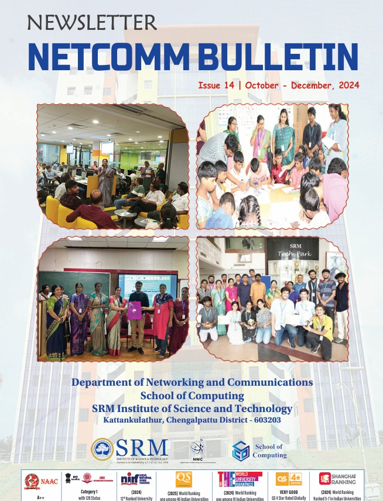
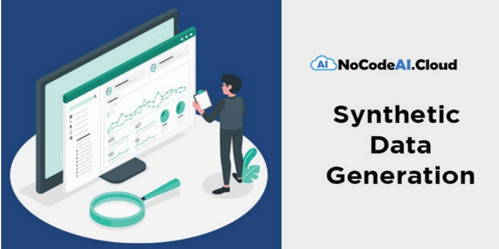
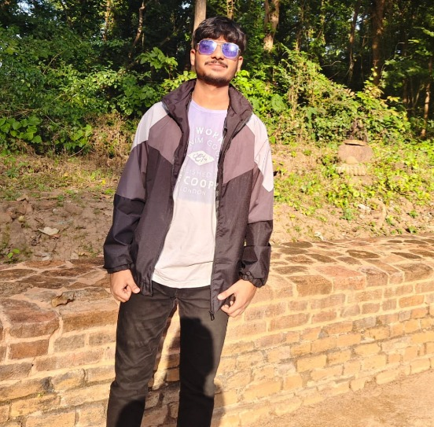
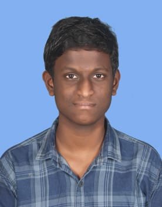
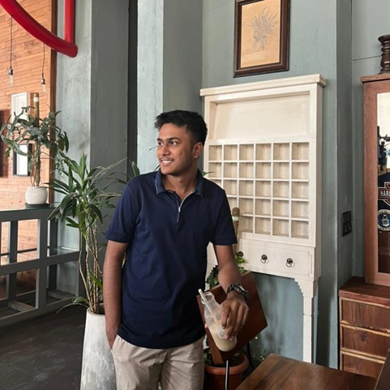

<!DOCTYPE html>
<html lang="en">
<head>
    <meta charset="UTF-8">
    <meta name="viewport" content="width=device-width, initial-scale=1.0">
    <title>NEWSLETTER</title>
    <script src="https://cdn.tailwindcss.com"></script>
    <script>
        tailwind.config = {
            theme: {
                extend: {},
            }
        }
    </script>
   
 
</head>
<body style="background:#F5F5DC;
" >
    <!-- Top Navigation -->
    <div class=" shadow-md p-4 flex justify-between items-center" style="background-color:  #67d6e9; 
; 
    color: #E5E7EB; /* Soft Gray Text */
    border: 1px solid #64748B;
    
    
    
    
    ">
        <!-- Logo and Title -->
        <div id="logo" class="flex items-center space-x-3">
            
            <h1 class="text-xl font-bold flex " style="flex-direction: row;">SRM INSTITUTE OF TECHNOLOGY</h1>
        </div>

       
        <div class="flex space-x-4" >
            <!-- <select id="HomePage" style="border: 1px solid #ccc; padding: 8px; border-radius: 6px; color: #4a4a4a;"  onchange="redirectToPa()">
                <option>HOMEPAGE SECTION</option>
                <option value="homePage.html">HomePage</option>
            </select> -->

            <select class="border p-2 rounded-md text-gray-700" id="faculty" placeholder="FACULTY" onchange="redirectToPage()">
                <option>FACULTY SECTION</option>
                <option value="faculty.html">FACULTY</option>
                <option value="essays.html">Faculty Articles</option>
                <option value="achivements.html">Faculty achievements</option>
                <option value="promotion.html">Faculty promotions</option>
                <!-- <option>Workshops</option> -->
            </select>

            

            <select class="border p-2 rounded-md text-gray-700"  onchange="redirectToPagess()" id="events">
                <option value="#">EVENTS SECTION</option>
                <option value="events.html">Events</option>
                <!-- <option value="#">Workshops</option>
                <option value="#">Competitions</option> -->
            </select>

          
            <select class="border p-2 rounded-md text-gray-700 w-48" id="Research" onchange="redirectToPagesss()">
                <option value="#">Research Section</option>
                <option value="patent.html">PATENTS</option>
                <option value="FundedResearch.html">Fundings</option>
                <option value="journalism.html">Journals</option>
            </select>

            <select id="students" onchange="redirectToPagessss()" class="border p-2 rounded-md text-gray-700">
                <option value="#">STUDENTS</option>
                <option value="Studentachivement.html">Achievements</option>
                <option value="placement.html">Placements</option>
                <option value="StudentAlumini.html">Alumini Message</option>
                <option value="StudentArticle.html">Student Article</option>
                <option value="mou.html">International Collaboration </option>
            </select>

        


            <select class="border p-2 rounded-md text-gray-700" id="specializationSelect" onchange="redirectToPages()">
                <option value="#">Specilization Section</option>
                <option value="specilization.html">Specilization</option>
                <option value="cyberLab.html">Cyber Security Specialization and Labs</option>
                <option value="InformationTech.html">Information Technology Specialization</option>
                <option value="cloudComp.html"> Cloud Computing Specialization</option>
                <option value="iot.html"> Internet of Things Specialization</option>
                <option value="clomputerNetworking.html"> Computer Networking Specialization</option>
            </select>

            
            <!-- <select class="border p-2 rounded-md text-gray-700">
                <option>SRG</option>
                <option>SRG Initiatives</option>
                <option>Research Papers</option>
                <option>Innovation Projects</option>
            </select> -->
        </div>
    </div>

    <!-- Image Section -->
    <div class="page1 flex flex-col items-center justify-center ">

        
    </div>

    <!-- Message Section -->
    <div class="message1 text-center flex flex-col items-center p-6 "  >
       
        <h1 class="text-4xl text-blue-800 font-bold mb-4">CHIEF EDITORS WORDS</h1>
        <!--  -->
        <b class="text-red-900">“If you want to live a happy life, tie it to a goal, not to people or things.”</b>
        <b class="text-green-700 ml-8">— Albert Einstein</b>
        
        <!-- <h2 class="text-3xl text-blue-800 font-bold">Dr. B. Amutha</h2>
        <h3 class="text-2xl text-blue-700 font-semibold">Professor/School of Computing</h3> -->
        <div class="msgCont max-w-3xl text-gray-700 mt-4 text-justify">
            <h3 class="text-2xl font-semibold text-black">Dear Contemporaneous!</h3>
            <p class="mt-2 leading-relaxed text-blue-800 text-xl">
                By the Grace of Guard, we entered in to 2025 and meeting again to look in to our achievements in 
                the networked playground where our efforts in educational games lead us towards success
                <br>
                Let us dive in to Synthetic data generation, which is a process of artificially generated data 
that statistically resembles the old real dataset while maintaining compliance with data privacy 
regulations. Synthetic data is essential for training machine learning models, testing apps, and 
gaining business insights. 
                <br>
                <b class="text-red-900">Mostly AI: </b>Mostly AI offers an AI-powered synthetic data generator that uses advanced algorithms 
                to create high-quality, privacy-secure synthetic data with industry-leading accuracy
                <br>
                <b class="text-red-900">Synthesized.io:</b> Synthesized.io is a generative AI-powered synthetic data generator that creates 
                realistic, production-like test data while protecting sensitive information
                <br>
                <b class="text-red-900">YData: </b> YData supports various data types like time series, transactions, conversational, and 
                relational data to enable effective synthetic data generation and handling using generative AI.
               
                <br>
                <b class="text-red-900">K2View:</b>K2View offers an AI-powered synthetic data generation tool to generate realistic and 
                compliant synthetic data for various enterprise needs across development and testing environments 
                without compromising sensitive information and compliance.
            <br>
            <b class="text-red-900">Gretel Workflows : </b>Gretel Workflows enables developers to build scheduled synthetic data pipelines 
            that connect directly to data sources and AI/ML workflows. It easily integrates with cloud providers, 
            data warehouses, and popular ML tools and frameworks
            <br>
            <b class="text-red-900">DoppelGANger : </b>DoppelGANger is an open-source implementation of Generative Adversarial 
            Networks (GAN) to generate high-quality, synthetic time-series data. It is designed for privacypreserving applications and enables users to simulate realistic data while maintaining the statistical 
            properties of the original time series datasets with metadata. 
            <br>
            <b class="text-red-900">Synth :</b> Synth is an open-source data generator that helps you create realistic data to your 
            specifications, hide sensitive information, and develop test data for your applications. It can help 
            you protect sensitive information and build datasets for machine learning. 
            <br>
            <b class="text-red-900"> SDV.dev :</b> SDV (Synthetic Data Vault) is a comprehensive platform focused on high-quality synthetic 
            data generation for machine learning and data science. It includes a suite of libraries like CTGAN, 
            DeepEcho, and TimeGAN, catering to diverse data types such as tabular, time-series, and sequential 
            data. 
            <br>
            <b class="text-red-900">Tofu :</b> Tofu is an open-source Python library for generating synthetic data based on UK biobank 
            data. Unlike the tools mentioned before that will help you generate any data based on your existing 
            dataset, Tofu only generates data that resembles the UK biobank. 
            <br>
            <b class="text-red-900"> Twinify :</b> Twinify is an open-source Python library designed to generate and preserve privacypreserving synthetic datasets. It uses advanced differential privacy techniques to generate synthetic 
            data with identical statistical distributions.
            <br>
            <b class="text-red-900">Datanamic:</b> Datanamic Data Generator helps you quickly create realistic test data for your 
            databases. It’s perfect for developers, DBAs, and testers who need sample data to check if their 
            database-driven applications work properly. 
            <br>
            <b class="text-red-900">Benerator : </b>Benerator is a free and open-source tool for data obfuscation, generation, and migration 
            for testing and training purposes. It helps create realistic test data that meets strict validity rules, 
            making it ideal for unit, integration, and performance testing.
            Our NWC department strives hard with dedication and determination in the fields of data generation 
            and regeneration and its network, and the consecutive communication protocols to develop 
            cyber defensive systems effectively through several possible ways of conducting programs such 
            as international conferences, workshops, events, FDPs, placement drives, Alumni Meets, Invited 
            talks, Virtual connections with all modern networking and communication technologies, with their 
            intellectual faculty backbone. 
        <br>
        <br>
       <b> Catch you all in the Next Edition!!!</b>
       <br>
      <b class="text-green-700">“You can, you should, and if you’re brave enough to start, you will.”</b>  
      <br>
      <b class="text-red-700 ml-6">— Stephen King</b>
      <br>
      <div class="bg-blue-500 text-white p-6 rounded-lg shadow-lg text-center">
        <p class="text-lg font-semibold">Dr. B. Amutha</p>
        <p class="text-md">SCO-Newsletter Head</p>
    </div>
    
        </p>
        <br>
        <br>
        <h1 class="text-4xl text-blue-800 font-bold mb-4">MESSAGE FROM HOD</h1>
        
        <p class="text-3xl text-red-900 text-relaxed">“Even if one has mastered the arts, one must act in harmony with 
            the natural order of the world.”</p>
                <b class="ml-0 font-bold text-2xl"><i>Dear all,</i></b>
                <p class="text-2xl text-blue-900 text-relaxed">
                    Our department has consistently led in innovation, research, and academic quality. It is a dynamic centre of education and innovation, where we endeavour to connect academic knowledge with practical application. <br><br>

                    Our objective is to cultivate future-ready experts capable of contributing to the dynamic domains of networking and communication technology. This reflects the diligence, commitment, and teamwork of our students, instructors, and staff. <br><br>
                    
                    Our department upholds rigorous academic standards, with students routinely attaining top positions in university examinations. The comprehensive curriculum, developed in conjunction with industry specialists, guarantees that our graduates are adequately prepared to address real-world situations. <br><br>
                    
                    Research constitutes the foundation of our department. Our staff and students have disseminated several papers in esteemed international publications and conferences. We have obtained multiple research funds and established cooperation with prominent Government Organizations and academic institutions globally. <br><br>
                    
                    To guarantee our students are prepared for the industry, we have forged robust collaborations with prominent firms such as Cisco, IBM, Intel Technology Pvt Ltd, Virtusa Powered, and Red Hat. These relationships offer our students chances for internships, real projects, and placements. <br><br>
                    
                    Our department features state-of-the-art laboratories outfitted with the most advanced instruments and technologies. The Advanced Networking Lab, CISCO Academic Lab, Sentinel Lab, Red Hat Linux, Edge Intelligence Lab, SRM LaTrobe Joint Centre of Eminence on Next Technologies, and other laboratories exemplify facilities that facilitate practical learning and experimentation. <br><br>
                    
                    Our pupils have excelled both academically and in co-curricular and extracurricular activities. They have received awards in hackathons, coding challenges, and technical symposiums at both national and international levels. <br><br>
                    
                    Our department’s placement record has been exceptional, with students obtaining work at prestigious firms such as Junglee Games, JusPay, Microsoft, Google, and State Street. Our committed placement cell diligently provides students with essential training and advice to succeed in their careers. <br><br>
                    
                    As we commemorate our accomplishments, we remain attentive to the future. The domain of networking and communications is advancing at an extraordinary rate, and we are dedicated to remaining at the forefront. <br><br>
                    
                    We continually revise our curriculum to conform to industry trends and technological progress. <br><br>
                    
                    We want to promote interdisciplinary research through collaboration with various departments. This will allow us to address intricate issues and formulate novel solutions. <br><br>
                    
                    We offer our students a worldwide perspective and are actively developing additional international connections and student exchange programs. These programs will introduce our pupils to varied cultures and advanced technologies. <br><br>
                    
                    We are dedicated to fostering the entrepreneurial spirit inside our students. We seek to empower students to convert their ideas into successful companies, through initiatives like incubation centres and startup mentorship programs. <br><br>
                    
                    As accountable technologists, we are committed to utilizing our knowledge to tackle global issues. Our research and projects will progressively emphasize sustainable and socially beneficial solutions. <br><br>
                    
                    Students, I would like to underscore that your journey goes beyond mere knowledge acquisition; it encompasses the cultivation of curiosity, resilience, and ingenuity. The realm of networking and communications is extensive and replete with opportunity, and you possess the capacity to effectuate a substantial impact. <br><br>
                    
                    Success encompasses not only personal accomplishments but also collaboration and teamwork. Interact with your colleagues, get knowledge from your instructors, and utilize the resources at your disposal. The competencies and experiences acquired here will serve as the foundation for a prosperous and rewarding career. <br><br>
                    
                    Our accomplishments are solely attributable to the commitment and diligence of our faculty and staff. Their commitment to teaching, research, and mentorship is very commendable. I express my sincere appreciation to each individual for their contributions to the department’s achievement. <br><br>
                    
                    Our graduates are a source of pride, and their accomplishments motivate us to pursue excellence. We appreciate their ongoing support and participation in departmental activities. We extend our gratitude to our supporters and industry collaborators for your trust and partnership. Collectively, we can influence the future of networking dedication and communication. <br><br>
                    
                    I am optimistic that the Department of Networking and Communications will achieve new milestones and establish standards in education, research, and innovation as we go. Let us collaborate to forge a future that is both technologically sophisticated and inclusive, as well as sustainable. <br><br>
                    
                </p>
                <div class="bg-blue-500 text-white p-6 rounded-lg shadow-lg text-center">
                    <p class="text-lg font-semibold">Dr. M. Lakshmi</p>
                    <p class="text-md">Professor & Head,</p>
                    <p class="text-md">Department of Networking and Communications,</p>
                    <p class="text-md">SRM Institute of Science and Technology.</p>
                </div>
                
        </div>
        <!-- <div class="bg-white shadow-md p-4 flex justify-between items-center flex-col"> -->
           
                    
        <!-- </div> -->
        <!-- Faculty Team Section -->
<div class="facultyTeam text-center p-6 w-90">
    <div class="flex justify-center space-x-4">
        <div style="display: flex; flex-direction: column;">
          <b> <p class="text-red-900 text-2xl">Newsletter Head</p></b> 
        
       <b> <p class="text-pink-800 text-xl">Dr. B.Amutha</p>
        <p class="text-purple-800 text-xl">CO - Newsletter Head</p></b>
    </div>
        <div style="display: flex; flex-direction: column;"></div>
            <div>
               <b><p class="text-red-900 text-2xl"> Advisor</p></b> 
        
      <b>  <p class="text-pink-800 text-xl">Dr. M.Lakshmi</p>
        <p class="text-purple-800 text-xl">Professor & Head, NWC, SRMIST</p></b>
    </div>
    </div>
    </div>
    
    <h1 class="text-4xl text-blue-800 font-bold mb-6">Editorial Team</h1>
    
    <!-- <div class="grid grid-cols-2 sm:grid-cols-3  lg:grid-cols-3 gap-6">
        <div class="flex flex-col items-center">
            
            <p class="mt-2 text-lg font-semibold text-gray-800">Dr. V.M. Gayathri</p>
        </div>
        
        <div class="flex flex-col items-center">
            
            <p class="mt-2 text-lg font-semibold text-gray-800">Dr. P. Supraja</p>
        </div>
        
        <div class="flex flex-col items-center">
            
            <p class="mt-2 text-lg font-semibold text-gray-800">Dr. C. Fancy</p>
        </div>
        
        <div class="flex flex-col items-center">
            
            <p class="mt-2 text-lg font-semibold text-gray-800">Dr. M. Sundarrajan</p>
        </div>
        
        <div class="flex flex-col items-center">
            
            <p class="mt-2 text-lg font-semibold text-gray-800">Dr. N. Murugan</p>
        </div> -->
       <div style="display: flex; justify-content: center; align-items: center; ">
        <div  style="display: flex; flex-direction: column;">
            
            <p>
               <b class="text-2xl font-bold text-pink-800"> Dr. V.M.Gayathri</b>
                <br>
                  <p class="text-xl font-semibold text-purple-800">Associate Professor, 
                    <br>NWC, SRMIST</p> 
            </p>
        </div>
        <div  style="display: flex; flex-direction: column;">
            
            <p>
                <b class="text-2xl font-bold text-pink-800">Mrs. V.Vijayalakshmi</b>
                 <br>
                   <p class="text-xl font-semibold text-purple-800">Associate Professor,<br> NWC, SRMIST</p> 
             </p>
        </div>
        <div  style="display: flex; flex-direction: column;">
            
            <p>
                <b class="text-2xl font-bold text-pink-800"> Dr. C.Fancy</b>
                 <br>
                   <p class="text-xl font-semibold text-purple-800">Associate Professor, <br>NWC, SRMIST</p> 
             </p>
        </div>
       </div>
       <div style="display: flex; justify-content: center; align-items: center;">
        <div  style="display: flex; flex-direction: column;">
            
            <p>
                <b class="text-2xl font-bold text-pink-800"> Dr. M.Sundarrajan</b>
                 <br>
                   <p class="text-xl font-semibold text-purple-800">Associate Professor,<br> NWC, SRMIST</p> 
             </p>
        </div>
        <div  style="display: flex; flex-direction: column;">
            
            <p>
                <b class="text-2xl font-bold text-pink-800"> Mrs. D.Saisanthiya</b>
                 <br>
                   <p class="text-xl font-semibold text-purple-800">Associate Professor,<br> NWC, SRMIST</p> 
             </p>
        </div>
        <div  style="display: flex; flex-direction: column;">
            
            <p>
                <b class="text-2xl font-bold text-pink-800"> Dr. G.Abinaya</b>
                 <br>
                   <p class="text-xl font-semibold text-purple-800">Associate Professor,<br> NWC, SRMIST</p> 
             </p>
        </div>
        </div>
       
        <div style="display: flex; justify-content: center; align-items: center;">
            <div  style="display: flex; flex-direction: column;">
                  
                  <p>
                    <b class="text-2xl font-bold text-pink-800 ">Ms. Justina Michael J</b>
                     <br>
                       <p class="text-xl font-semibold text-purple-800">Teaching Associate, <br>NWC, SRMIST</p> 
                 </p>
            </div>
            <div  style="display: flex; flex-direction: column;">
                
                <p>
                    <b class="text-2xl font-bold text-pink-800"> Mr. N.Murugan</b>
                     <br>
                       <p class="text-xl font-semibold text-purple-800">Programmer,<br> NWC, SRMIST</p> 
                 </p>
            </div>
        </div>
        <br>
        <h1 class="text-4xl text-blue-900 font-bold">Student Team</h1>
        <br>
        <div class="flex justify-between space-x-4">
            
            <div class="flex-1">
                
             
                    <h2 class="text-2xl text-black font-bold">Pallavi Kumari</h2>
                    <h2 class="text-2xl text-black font-bold">RA2411031010015</h2>
                    <h3  class="text-xl text-black font-semibold">CS-IT W2 ,NWC</h3>
               
            </div>
            <div class="flex-1">
                <h2 class="text-2xl text-black font-bold">Shivam Chitlangia</h2>
                <h2 class="text-2xl text-black font-bold"> RA2411031010051</h2>
                <h3 class="text-xl text-black font-semibold">CS-IT W2 ,NWC</h3>
            </div>
            <div class="flex-1">
                <h2 class="text-2xl text-black font-bold">Sai Abhijeet</h2>
                <h2 class="text-2xl text-black font-bold">RA2411031010045</h2>
                <h3  class="text-xl text-black font-semibold">CS-IT W2 ,NWC</h3>
            </div>
            <div class="flex-1">
                <h2 class="text-2xl text-black font-bold">Abhinav Shankar</h2>
                <h2 class="text-2xl text-black font-bold"> RA2411031010042</h2>
                <h3  class="text-xl text-black font-semibold">CS-IT W2 ,NWC</h3>
            </div>
        </div>
        <div >
            <br>
            <div class="p-6 max-w-4xl mx-auto">
                <h2 class="text-4xl text-red-900 font-bold mb-4 text-center">About the Department</h2>
                
                <p class="text-2xl text-gray-800 leading-relaxed text-justify"  >
                    Department of Networking and Communications under School of Computing intend to meet the 
                    expectations of the aspiring students and to add more value to the degrees offered. The Department 
                    ensures to provide quality and value-laden education for students in the traditional and contemporary 
                    areas of Cloud Computing, Computer Networks, Cyber Security, Information Technology and Internet 
                    of Things.
                </p>
            
                <p class="text-2xl text-gray-800 leading-relaxed mt-4 text-justify">
                    The programs are introduced in partnership with reputed IT companies like Amazon Web services, 
K7 Security, Virtusa etc. The department consists of a medley of faculty members with industrial 
and academic experience. The Department’s keen focus is towards “networks”domain specific and 
specialization-based placement drives for its students. The department inculcates entrepreneurial 
skills in budding aspirants to pitch their innovative ideas through SRM Innovation and Incubation 
Center. Our International and alumni connect intrigue in bridging the gap between the trio: 
Academics-Industry -Research.
                </p>
            
                <h3 class="text-green-700 text-3xl font-semibold mt-8">Vision</h3>
                <p class="text-2xl text-gray-800 leading-relaxed mt-2 text-justify" >
                    To nurture a globally recognized department that imparts high-quality education and fosters 
                    confidence, unique knowledge, and research experience in networking, cyber security, forensics, 
                    information technology, cognitive computing, and the Internet of Things.
                </p>
            
                <h3 class="text-green-700 text-3xl font-semibold mt-8 ">Mission</h3>
                <div class="list-disc list-inside text-2xl text-gray-800 leading-relaxed mt-2 text-justify" style=" width: 1000px; margin-left: -40px;">
                    To provide world-class IT professionals with an industry and research-based curriculum.
                    To train students for entrepreneurship and help develop industries that cater to societal needs.
                    To nurture students as socially responsible professionals by providing training in personality 
                        development, ethics, and leadership programs.
                </div>
            </div>
            <br>
            <br>
            <div class="flex flex-col space-y-6">
                <div class="flex flex-col space-y-6">
                    <!-- Undergraduate Programs -->
                    <div class="flex flex-col">
                        <h1 class="text-4xl font-bold text-blue-800 mb-3">Undergraduate Programs</h1>
                        <div class="list-disc ml-6 space-y-2 text-2xl text-justify" >
                            <b style="margin-left: 150px;" >B.Tech.</b> Computer Science and Engineering with Specialization in Cloud Computing<br>
                            <b style="margin-left: 150px;">B.Tech.</b> Computer Science and Engineering with Specialization in Computer Networking<br>
                            <b style="margin-left: 150px;">B.Tech.</b> Computer Science and Engineering with Specialization in Cyber Security<br>
                            <b style="margin-left: 150px;">B.Tech.</b> Computer Science and Engineering with Specialization in Information Technology<br>
                            <b style="margin-left: 150px;">B.Tech.</b> Computer Science and Engineering with Specialization in Internet of Things<br>
                        </div>
                    </div>
                    <br>
                    <br>
                
                    <!-- Postgraduate Programs -->
                    <div class="flex flex-col">
                        <h1 class="text-4xl font-bold text-blue-800 mb-3">Postgraduate Programs</h1>
                        <div class="list-disc ml-15 space-y-2 text-2xl text-2xl text-justify"  >
                            <b style="margin-left: 150px;">M.Tech.</b> Cloud Computing<br>                             
                            <b style="margin-left: 150px;">M.Tech.</b> Information Security and Cyber Forensics<br>
                            <b style="margin-left: 150px;">M.Tech.</b> Internet of Things<br>
                            
                                <b style="margin-left: 150px;">M.Tech. (Integrated)</b> – Computer Science and Engineering with Specialization in Cyber Security 
                                and Digital Forensics
                            <br>
                        </div>
                        <br>
                        <br>
                
                        <!-- Collaboration Section -->
                        <h2 class="text-4xl font-bold text-red-900 mt-6">Collaboration with Great Learning</h2>
                        <div class="list-disc ml-6 space-y-2 text-2xl text-justify">
                            <br>
                            <b style="margin-left: 150px;">M.Tech.</b> Cloud Computing and Blockchain<br>
                            <b style="margin-left: 150px;">M.Tech.</b> Cyber Security<br> 
                        </div>
                    </div>

                    <h2 class="text-4xl font-bold text-red-900 mt-6"> Minor Programme </h2>
                    <div class="list-disc ml-6 space-y-2 text-2xl text-justify">
                        <br>
                        <p style="margin-left: 150px;">Certification in Cyber Security</p> 
                    </div>
                </div>
                <h2 class="text-4xl font-bold text-red-900 mt-6"> Research</h2>
                <div class="list-disc ml-6 space-y-2 text-2xl text-justify">
                    <br>
                    <b style="margin-left: 150px;">PhD</b>in Computer Science and Engineering<br> 
                </div>
            </div>
                </div>
                

        <a href="facts.html" class="text-blue-800 font-semibold text-xl mt-6">Read More</a>
    </div>
    
<script src="nwc.js"></script>
</body>
</html>